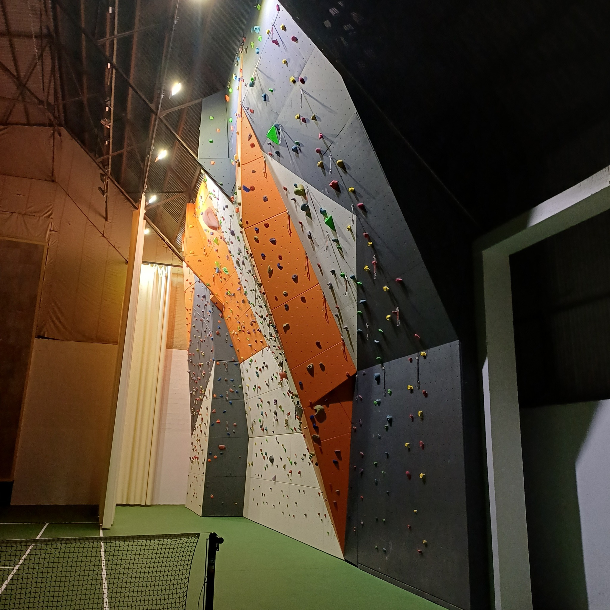

NOTICIAS
III Concurso de fotografía en Villaviciosa (2025)
El 17 de octubre, el Teatro Riera de Villaviciosa acogió la gala de entrega de premios de FotoMaliayo 2025, su tercer año del Concurso de Fotografía de Villaviciosa. Tras la proyección del documental "El reino de los pastores", se hizo entrega de los galardones a las mejores fotografías de las categorías correspondientes. En el enlace, Concurso de Fotografía, se pueden ver las mejores fotografías del certamen.

Próxima inauguración del rocódromo en Villaviciosa
Con motivo de la próxima inauguración del Rocódromo Municipal de Villaviciosa, el Grupo de Montaña Llama Ello será el responsable de su gestión deportiva, motivo por el cuál comienza un proceso de selección de proyectos deportivos enfocados a la imparticición de cursos de escalada, cursos de iniciación, perfeccionamiento, etc... tanto para menores como adultos. Si estás en posesión de la acreditación profesional necesaria y estás interesado en formar parte del proyecto, puedes enviarnos tu C.V a: grupollamaello@gmail.com
PRÓXIMA SALIDA
Domingo 26 de octubre:
Peñas Pintas
Alternativa: Calzada romana de Las Salas
Ver cartel